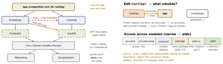

build · folio
In one line: Cut the app into modules (local SPM packages) along seams that change independently; features depend on each other’s interfaces only, dependencies point down, and a thin app target composes the concrete implementations. The payoff is faster incremental builds and compiler-enforced boundaries.
Download PDF Print view LaTeX source


How it works
- Why: incremental builds (only a changed module + its dependents recompile), enforced boundaries (
internalis the default, so nothing leaks by accident), ownership (a team per package), isolated tests + fast SwiftUI previews, reuse across app, widget, extensions, App Clip. - Layers: App → Features → Interfaces/Core → Foundation. Acyclic; SPM rejects target cycles (package-to-package cycles are allowed from tools 6.0), but does not forbid Feature→Feature edges — that rule is policy (review, CI graph lint).
- API/Impl split:
FeatureAPI= protocols, routes, DTOs (no heavy deps);FeatureImpl= UI + logic. Others import the API; the app injects the Impl. Cross-feature navigation = aRouter/Routeenum in Core, resolved by the app. - Package.swift: first line
// swift-tools-version:5.9; products = what consumers can import (.library,.executable,.plugin); targets = compilation units = modules; package dependencies (which repo/version) and per-target dependencies (.product(name:package:)) — you need both. - Versions:
from: "1.2.0"=>=1.2.0 <2.0.0;.exact, ranges; commitPackage.resolvedfor apps. - Resources:
.process(optimised: asset catalogs, localisation) or.copy(verbatim). Load via the synthesisedBundle.module— only generated when the target has resources. - platforms:
[.iOS(.v16)]is the package’s minimum; it does not set the app’s deployment target. - Binary target:
.binaryTarget(name:url:checksum:)(orpath:) wraps a prebuilt.xcframework; checksum of the zip fromswift package compute-checksum. - Plugins: build-tool (runs every build: SwiftGen, protobuf) vs command (
swift package <verb>: lint, format). Sandboxed.
Example — a feature package
// swift-tools-version:5.9
import PackageDescription
let package = Package(name: "Cart", platforms: [.iOS(.v16)],
products: [.library(name: "CartAPI", targets: ["CartAPI"]),
.library(name: "CartImpl", targets: ["CartImpl"])],
dependencies: [.package(path: "../Core"),
.package(url: "https://github.com/apple/swift-log",
from: "1.5.0")],
targets: [
.target(name: "CartAPI"), // protocols + models
.target(name: "CartImpl", dependencies: ["CartAPI",
.product(name: "Core", package: "Core"),
.product(name: "Logging", package: "swift-log")],
resources: [.process("Resources")]), // -> Bundle.module
.testTarget(name: "CartTests", dependencies: ["CartImpl"])])Traps
- Product ≠ target. Other packages depend on products; a target not exposed as a product is private to its package.
- 40 modules that import each other’s concrete Impl = file layout, not a graph: all the overhead, none of the incremental-build win.
- Image blank /
nilinside a package → loaded fromBundle.main; useBundle.module. - Over-modularization: per-module manifest, link and DI cost; clean builds can get slower. Cut along ownership/change seams, not per screen.
- A giant
Commonmodule that everything imports and that changes weekly recompiles the world — split it (DesignSystem, Networking, …). ServiceLocator.sharedinside features hides dependencies — inject API protocols throughinitfrom the composition root.package(Swift 5.9) ≠@_spi:package= visible to modules in the same package;@_spi(X)= public but only for importers writing@_spi(X) import(underscored, unofficial)..library(type:)omitted = automatic: SwiftPM picks (usually static(unverified)). Static in app and extension = two copies; dynamic = one copy + dyld cost..unsafeFlagsmake the target’s products ineligible for use by other packages — fine in the app’s own root package, fatal in a shared one.
Remember
“API up, Impl hidden, arrows down, app wires.” Litmus: can I build and preview any one feature in seconds with mocks, and does editing X never recompile Y?